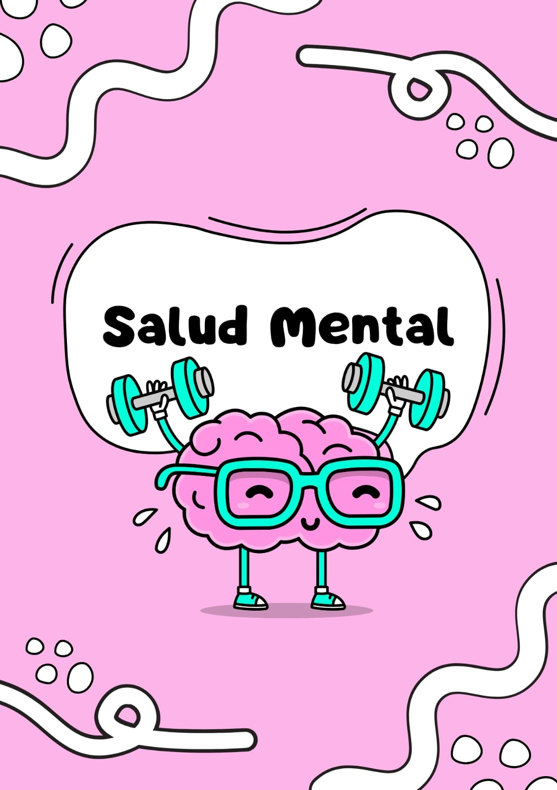
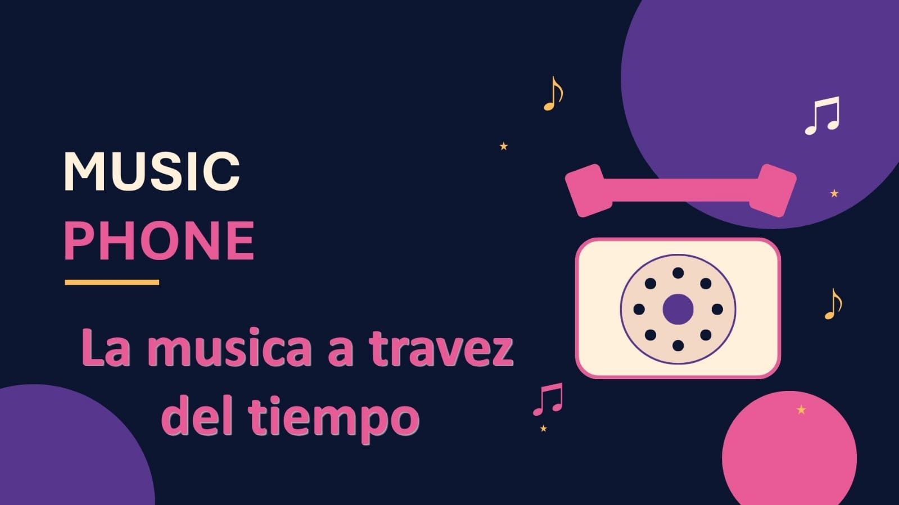

Grupo 1: Tres Locos al Micrófono
Integrantes:Bramante, Agustín - Matta, Luciano - Schell, María
Contamos historias y anécdotas que se escuchan y suceden en los pasillos de nuestra escuela.
Bienvenidos al espacio de comunicación realizado por alumnos secundario adultos. En este repositorio de podcasts compartimos historias, opiniones, investigaciones y experiencias sobre temas que nos interesan e impactan en nuestra comunidad.
Integrantes:Bramante, Agustín - Matta, Luciano - Schell, María
Contamos historias y anécdotas que se escuchan y suceden en los pasillos de nuestra escuela.

Integrantes: Arretche, Lucas - Piras, Malena - Pucheu, Débora - Videla, Jeremías
Experiencias paranormales de ayer y hoy.

Integrantes: Alvarado, Lourdes - Rivero, Paola - Rodríguez, María
Conversaciones para comprendernos mejor con temas que atraviesan problemas de Salud Mental.

Integrantes: Jerez, José Luis - Tibberi, Zunilda - Zapata, Rosana
Conectando sabores.
Integrantes: Monio, Claudia - Peñalba, Michelle - Sorucco, Luciana - Sosa, Brian
Cocina con Amigos

Integrantes: Amengual, Javier - Rodríguez, Gustavo - Zappa, Leandro
Invitados Especiales: Uma Gailach y Nicolás Gailach
La historia y evolución de los diferentes estilos de música que escuchamos a través de los años.

Integrantes: Diez, Magalí - Guillán, Felipe - Martino, Gabriel - Pérez, Tiziano
Cómo afectan la tecnología y las redes sociales en nuestras vidas.